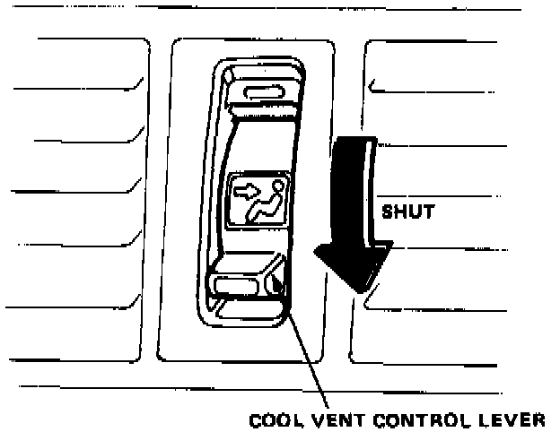
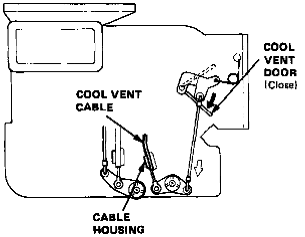
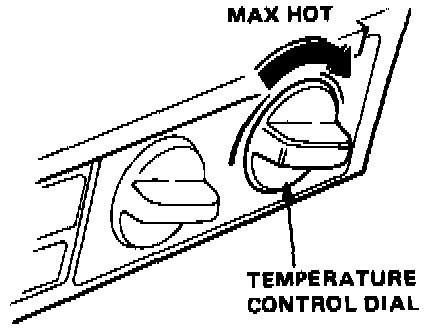
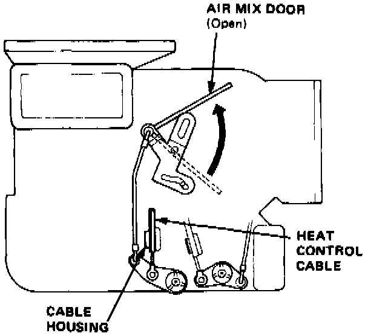

Housing Assembly HVAC: Adjustments
CABLE ADJUSTMENT AND INSTALLATIONCool Vent Cable

1. Slide the Cool Vent control lever to shut.

2. Close the Cool Vent door fully, then connect the end of the Cool Vent cable to the door arm, and snap the cable housing into the clamp.
NOTE: After installation, check that the cable moves smoothly and the door fully opens and closes when operatin9 the control lever.
Heat Control Cable

1. Turn the temperature control dial to max HOT.

2. Open the air mix door, then connect the end of heat control cable to the arm, and snap the cable housing into the clamp.
NOTE: After installation, check that the cable moves smoothly and the door fully opens and closes when operating the control dial.